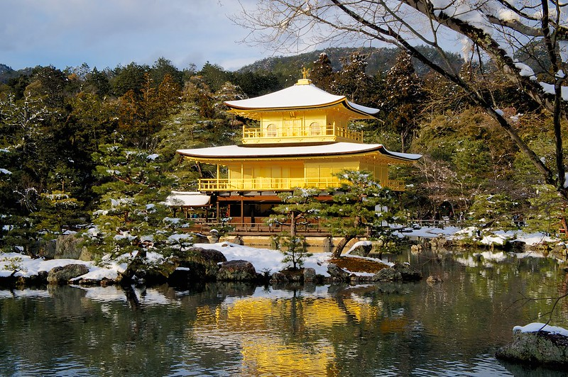

My First Snow in Kyoto
[Click the image to view on Google Maps]

Finally, we ended the snow days by visiting the famous golden temple in Kyoto, Kinkakuji Temple, which was shining even brighter thanks to the snow.
Previous Page
RETURN